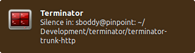

Plugins¶
Terminator can be expanded using plugins. Additional features can be created outside of the main application, and added in at runtime.
In theory you should be able to implement fairly powerful plugins, although so far the included ones we have are fairly small in scope.
The current plugins do not have configuration options in the Plugins tab of the Preferences Window. The plugin architecture was created before I (Steve Boddy) became maintainer, and so far I haven’t had reason to figure out the detail. I’m not entirely sure if/how a plugin can add options to the configuration options in the Plugins tab. What plugins can definitely do, because examples are below, is to:
- add menu items to The Context Menu,
- create their own windows,
- create handlers for strings that match a pattern.
Note

Several of the included plugins create Click-able items in the terminal. These are made apparent by underlining the item when the mouse hovers over it.
Included plugins¶
The following plugins are distributed by default with Terminator.
Note
Unless otherwise stated, the included plugins are under the Licensing as Terminator, GNU GPL v2.
Activity Watch¶
Original Author: Chris Jones

Adds a menu item, Watch for activity, to The Context Menu which will create a notification, as seen to the right, when there is output to the terminal. This is useful when you have a long running command and wish to know when it has completed, or output an update.
There is one option for this plugin:
hush_period (default: 10.0)
How long in seconds until the next notification of activity is presented.
Note
There is currently no way to edit these options in the GUI, it must be done directly in The Config file.
An extract of this item being set would be:
[plugins]
[[ActivityWatch]]
hush_period = 30.0
Which would wait 30 seconds before showing another notification of activity.
APT URL Handler¶
Original Author: Chris Jones
Text matching apt:.* will be converted into a click-able item that
when triggered with Ctrl+click will launch the default
package manager for software on a debian system.
right-click over the URL will add two entries to The Context Menu:
- Open software manager - Same as
Ctrl+click - Copy package URI - Just copies the URI to the clipboard
Inactivity Watch¶
Original Author: Chris Jones
Adds a menu item, Watch for silence, to The Context Menu which will create a notification, as seen to the right, when a terminal has been quiet for a given period. This is useful when you have a long running process that outputs constantly (i.e. compiling a kernel) and you wish to know when it has ended. This notification will only show once, unless there is some activity in the terminal after the initial notification.
There are two options for this plugin:
inactive_period (default: 10.0)
How long in seconds until a terminal is considered inactive.
watch_interval (default: 5000)
How long in milliseconds between checks for inactivity.
Be aware that this combination will result in some uncertainty as to the exact timing of the notification. In the worst case, with the values given, the notification may take 14.9 seconds to appear.
Note
There is currently no way to edit these options in the GUI, it must be done directly in The Config file.
An extract of these items being set would be:
[plugins]
[[InactivityWatch]]
inactive_period = 30.0
watch_interval = 1000
Which would check every second if the terminal had been silent for 30 seconds.
Launchpad Bug URL Handler¶
Original Author: Chris Jones
Text matching lp: #12345 where 12345 is a bug number in launchpad,
will be converted into a click-able item that when triggered with
Ctrl+click will launch a browser to the bug report in
launchpad.
Additionally the plugin will accept variants where the prefix is in
capitals, i.e. LP, and the :, white-space, and # are
optional.
The item can also be more than one bug number, and each will be opened, for example:
lp: #12345. #67890, 54321,#9876
Ctrl+click on this will open four pages; one for each bug
number.
right-click over the URL will add two entries to The Context Menu:
- Open Launchpad bug - Same as
Ctrl+click - Copy bug URL - Just copies the URL to the clipboard
Launchpad Code URL Handler¶
Original Author: Chris Jones
Text matching lp:string will be converted into a click-able item
that when triggered with Ctrl+click will launch a browser
to the page in launchpad, where string is one of the following:
- project - i.e. lp:terminator
- project/series - i.e. lp:terminator/gtk3
- group/project/branch - i.e. lp:~sparkstar/terminator/terminator
- group/+junk/branch - i.e. lp:~<yourname>/+junk/terminator
Additionally the plugin will accept variants where the prefix is in
capitals, i.e. LP.
right-click over the URL will add two entries to The Context Menu:
- Open Launchpad branch - Same as
Ctrl+click - Copy branch URL - Just copies the URL to the clipboard
Logger¶
Original Author: Sinan Nalkaya
Adds a menu item, Start Logger, to The Context Menu which will popup a window for selecting a file name to save as. Any content then written to the terminal will be written to the file too. Once started the menu item will change to Stop Logger which does precisely what you would expect.
Warning
There appears to be problems when applications switch to/from alternate mode (i.e. vi, mc, etc.) The obvious one is that the alternate screen is not “logged” although it is not clear how this could be logged. The second issue is that some of the output after the alternate screen is not logged. See LP#1477386 for more info and progress.
Maven Plugin URL Handler¶
Original Author: Julien Nicoulaud
Ummmm..... I’m not entirely sure what this will do, as I don’t use Maven. Updates on a postcard, please...
From the source:
Maven plugin handler. If the name of a Maven plugin is detected, it is turned into a link to its documentation site. If a Maven plugin goal is detected, the link points to the particular goal page. Only Apache (org.apache.maven.plugins) and Codehaus (org.codehaus.mojo) plugins are supported.
Terminal Shot¶
Original Author: Chris Jones
Adds a menu item, Terminal screenshot, to The Context Menu that will take a screenshot of the underlying terminal, and present a dialog for where to save it.
Third party plugins¶
As I find (or I’m told about) plugins that are available elsewhere, I’ll add links here. I’ve done a preliminary search, and.. Wow! I never knew there were so many out there.
If any of the authors would like to get their plugins added to the main Terminator package, or they would prefer not to be listed here for some reason, they can reach out to me through the project site on Launchpad and we can sort it out.
I’m unsure of how these plugins are perceived. They are specific to Terminator, but does that make them derivative in the eyes of GPL v2, and therefore allow me to include them? If I want to include one in the main package, do I have to hope the creator is still active? Answers on a postcard...
Warning
I have done no testing or checking of these plugins. You use at your own risk, and you are responsible for evaluating the code for bugs, issues, and security.
In absolutely no order at all...
- https://github.com/rail/dotfiles/blob/master/terminator_bugzilla_handler.py
- terminator_bugzilla_handler: Link “bug:12345” to the Mozilla bugzilla. (As it is for Mozilla, it seems a bit misnamed.)
- https://github.com/ilgarm/terminator_plugins
- clone_session: Split and clone ssh session
- https://github.com/arnaudh/terminator-plugins
- open_any_file_plugin: Open any file with it’s default application
- https://github.com/dr1s/terminator-plugins
- cluster_connect: A way to connect to multiple machines as a cluster
- https://github.com/mchelem/terminator-editor-plugin
- editor_plugin: Click on file:line style links to launch a text editor
- https://github.com/camillo/TerminatorPlugins
- LayoutManager: Saves and restores Layouts (which is built-in now, possibly redundant)
- TerminalExporter: Export contents to file
- https://github.com/choffee/terminator-plugins
- searchplugin: Search Google for the selected text in a terminal
- https://github.com/papajoker/editor_terminator
- editor_plugin: Another text editor launcher
- https://github.com/papajoker/git_terminator
- git_plugin: adds commands for git when it detects a .git folder
- https://github.com/iambibhas/terminator-plugins
- hastebin: Uploads selected text to Hastebin and opens browser on it
- https://github.com/abourget/abourget-terminator
- TenscoresPlugin: Seems to be for launching set of tabs (which is built-in now, possibly redundant)
- https://github.com/mikeadkison/terminator-google
- google: Another google-the-text plugin
- https://github.com/mariolameiras/ssh-menu-terminator
- ssh_menu: I’m guessing a bit, but I think it works with SSH Menu ;-) the code is quite big to understand at a glance.
- https://github.com/alesegdia/terminator-plugins
- Session: Save/load sessions (which is built-in now, possibly redundant)
- https://github.com/Theer108/colorize
- colorize: Colour titlebar of each terminal separately
- https://github.com/ju1ius/clisnips
- clisnips: Snippets for the command line.
- https://github.com/GratefulTony/TerminatorHostWatch
- hostWatch: Attempts to figure out your current host, and apply a certain theme.
- https://github.com/kmoppel/dumptofile
- dump_to_file: Dump console contents to a text file.
- https://bitbucket.org/pgularski/terminator-plugins
- show_titlebar: Menu item to show/hide the titlebar.
- searchplugin: Yup, another Googler.
- https://bitbucket.org/johnsanchezc/terminator-applauncher
- applauncher: A launcher/set-up tool (which is built-in now, possibly redundant)
- https://www.snip2code.com/Snippet/58595/Terminator-plugin—-log-the-output-of-t
- my_logger: Log the output to a file with a time-stamp as the name, and prefix each line with the time. (Seems to be similar to, or derived from, the included one)
Installing a plugin¶
A plugin can be installed by adding the main python file (along with any additional files) in one of two locations:
/usr/[local/]share/terminator/terminatorlib/plugins/- This will need root permissions to do. The optional
local/is usually for packages installed by hand, rather than through the package manager, and this depends on how Terminator was installed on your system. ~/.config/terminator/plugins/- This allows you to use plugins without needing root.
Creating your own plugins¶
Note
The following guide is initially sourced from a tutorial written by Chris Jones back in April 2010. I’m reproducing it here as a precaution, although I don’t expect the original will disappear. It will get rewritten and expanded as more knowledge and information is added.
One of the features of the new 0.9x series of Terminator releases that hasn’t had a huge amount of announcement/discussion yet is the plugin system. I’ve posted previously about the decisions that went into the design of the plugin framework, but I figured now would be a good time to look at how to actually take advantage of it.
While the plugin system is really generic, so far there are only two points in the Terminator code that actually look for plugins - the Terminal context menu and the default URL opening code. If you find you’d like to write a plugin that interacts with a different part of Terminator, please let me know, I’d love to see some clever uses of plugins and I definitely want to expand the number of points that plugins can hook into.
The basics of a plugin¶
A plugin is a class in a .py file in terminatorlib/plugins or
~/.config/terminator/plugins, but not all classes are automatically
treated as plugins. Terminator will examine each of the .py files it
finds for a list called available and it will load each of the
classes mentioned therein.
Additionally, it would be a good idea to import terminatorlib.plugin
as that contains the base classes that other plugins should be derived
from.
A quick example:
import terminatorlib.plugin as plugin
available = ['myfirstplugin']
class myfirstplugin(plugin.SomeBasePluginClass):
# etc.
So now let’s move on to the simplest type of plugin currently available in Terminator, a URL handler.
URL Handlers¶
This type of plugin adds new regular expressions to match text in the terminal that should be handled as URLs. We ship an example of this with Terminator, it’s a handler that adds support for the commonly used format for Launchpad. Ignoring the comments and the basics above, this is ultimately all it is:
class LaunchpadBugURLHandler(plugin.URLHandler):
capabilities = ['url_handler']
handler_name = 'launchpad_bug'
match = '\\b(lp|LP):?\s?#?[0-9]+(,\s*#?[0-9]+)*\\b'
def callback(self, url):
for item in re.findall(r'[0-9]+', url):
return('https://bugs.launchpad.net/bugs/%s' % item)
That’s it! Let’s break it down a little to see the important things here:
- inherit from plugin.URLHandler if you want to handle URLs.
- include ‘url_handler’ in your capabilities list
- URL handlers must specify a unique handler_name (no enforcement of uniqueness is performed by Terminator, so use some common sense with the namespace)
- Terminator will call a method in your class called callback() and pass it the text that was matched. You must return a valid URL which will probably be based on this text.
And that’s all there is to it really. Next time you start terminator you should find the pattern you added gets handled as a URL!
Wrap up¶
Right now that’s all there is to it. Please get in touch if you have any suggestions or questions - I’d love to ship more plugins with Terminator itself, and I can think of some great ideas. Probably the most useful thing would be something to help customise Terminator for heavy ssh users (see the earlier fork of Terminator called ‘ssherminator’)